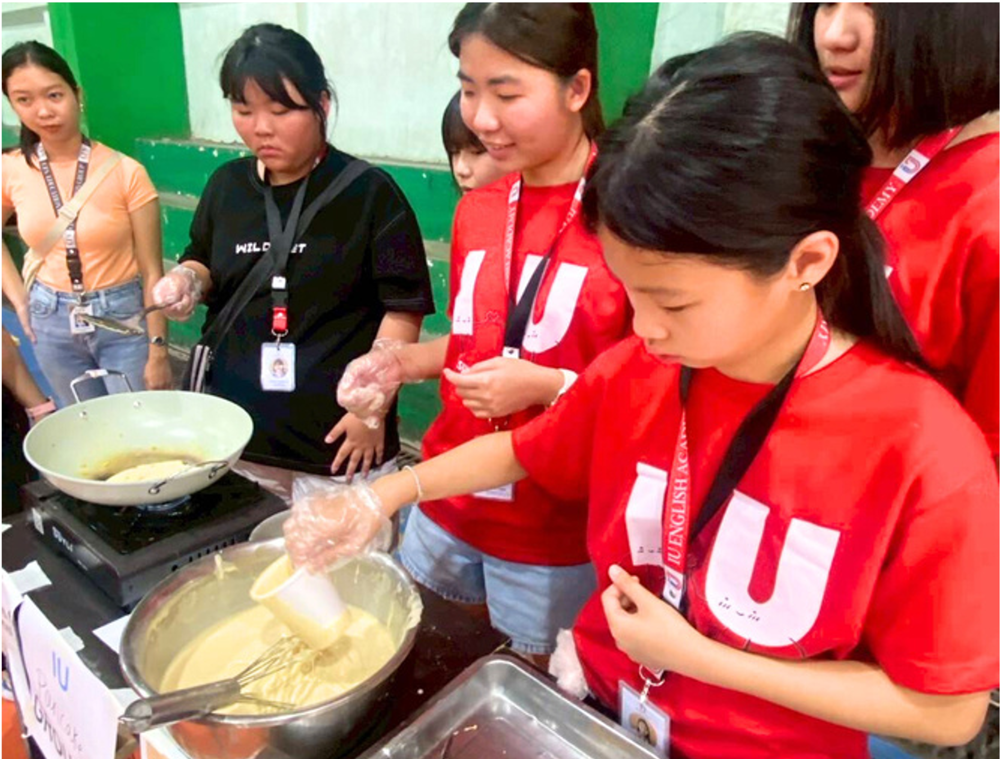
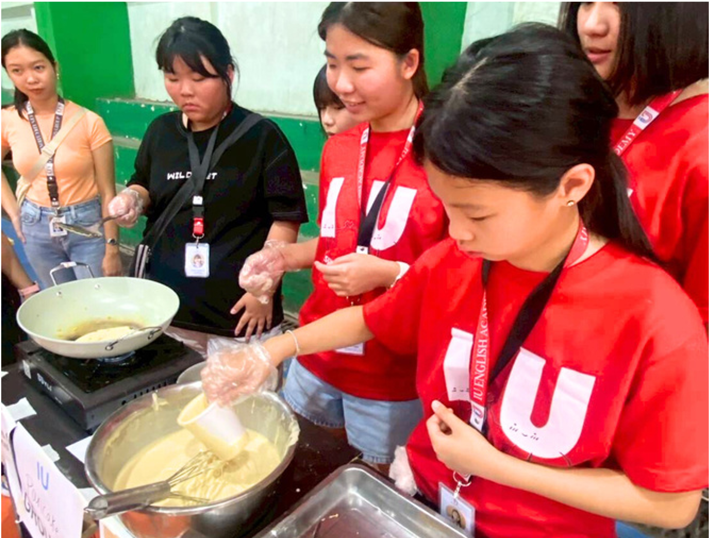

孩子的未來，從開口說英語開始。皇家菁英美語結合海外浸潤課程，帶孩子走進世界，學習自信、培養獨立。
- 一、課程與學習相關
-
Q1：皇家 & IU親子遊學的核心特色？
A：「美語 × 健康 × 生活」三合一，全英語口說課程結合日常運動與城市生活體驗。
-
Q2： 與其他遊學團最大課程差異是什麼？
A：皇家菁英美語親子遊學營除了 IU 正規課外，1/26 – 2/8 每日再多 2 堂皇家主題英語特色課，總學習量顯著增加。這些課程特別設計將台灣學生所學、所習慣的內容融入其中，讓孩子在熟悉的環境中學習英語，進一步提升學習效果和自信心。即使回到台灣後，孩子們仍能在課本中看到相關內容，持續鞏固所學。
-
Q3：課程內容包含哪些？
A：課程依程度分班，採「1對1英語教學」＋「小班互動課」並行，涵蓋聽、說、讀、寫四大能力。每日 8堂課，上午語言密集學習，下午活動任務式英語，讓孩子在生活中實踐英文。
-
Q4：老師是外師嗎？教學品質如何？
A：菲律賓老師皆具備 TESOL / TEFL 證照，受過兒童英語教學與口音訓練。皇家合作學校為宿霧當地高評價語言中心，確保每位教師發音標準、課堂互動性強。
-
Q5：課程難度會不會太難或太簡單？
A：到校時會先安排英文程度測驗，學校會依照聽、說、讀、寫各方面的程度安排適合教材，確保學習目標明確。
-
Q6：每天上幾堂課？學習時數多嗎？
A：每天約8堂課，包含每日4堂1對1課程、4堂小組互動課或活動課，學習密度高、成效明顯。
-
Q7：除了課堂學習，還有其他活動嗎？
A：除了課堂學習外，會安排文化與體驗活動，如海島探索、當地市集英語任務、手作課程等，讓孩子在「玩中學、用中記」，自然開口說英語。
-
Q8：師資如何選、老師口音會不會影響？
A：老師需持有 TESOL/TEFL 或菲律賓教育證書，入校前通過教學觀摩與口音測試（學校提供測試標準），課程以互動為主，若家長/學生反映不合適可申請更換老師（依校方流程）。
-
Q9： 雨天或氣候不佳怎麼辦？
A：調整為室內文化課、英語電影、角色扮演等備用方案。
- 二、住宿與生活
-
Q10：IU English Academy 校區位在哪裡？
A：營隊位於菲律賓宿霧市中心 IU English Academy 校區，步行約 10 分鐘可達 Ayala Mall。
-
Q11：住宿是學生宿舍還是飯店？幾人一間房？
A：為確保學生安全，統一校內住宿舍，皆含冷氣、熱水、每日清潔與洗衣服務。冬令營為3人一間房，兩週升級為2人房，每人需補美金60元差額。
-
Q12：宿舍與環境安全嗎？
A：宿舍採封閉式校園管理，24小時警衛與監控系統。僅有學生與工作人員可進出，安全性高。
-
Q13：餐食如何？孩子吃得習慣嗎？
A：每日三餐均由校方廚房精心準備，餐食融合多國風味料理，採自助式形式，選擇豐富。同時也有台式菜色，貼近台灣孩子的口味，因此大多數學生都能輕鬆適應。
-
Q14：特殊飲食需求可否安排？
A：可提供蛋奶素、全素與過敏客製餐，報名時註明即可。
-
Q15：手機使用規範？
A：週一至週五夜間 21:00–22:00 開放，週末彈性使用。
-
Q16：有醫護或保險安排嗎？
A：學校配有合作醫院與駐校護士，旅平險與海外醫療保險由家長依需求自行購買。
-
Q17：住宿環境與設備如何？
A：學生可選擇校內宿舍或合作飯店，皆有冷氣、熱水、獨立衛浴、房間清潔與洗衣服務。宿舍提供專屬生活老師協助孩子日常起居。
-
Q18：孩子如果想家怎麼辦？
A：隨團中籍老師與學校輔導老師會協助適應，並提供「夜間視訊時間」（例如每晚 20:00 給家長 5–10 分鐘視訊），同時鼓勵孩子寫「每日學習亮點」，老師會回傳給家長。
-
Q19：遇到生病或受傷如何處理？
A：學校有駐校護士與合作醫院，若需就醫會先電話通知家長並取得同意，緊急情況則依醫療需求先處理並於第一時間通報家長。所有費用與保險理賠流程會在報名合約中明列。
-
Q20：菲律賓1-2 月天氣適合活動嗎？
A：非常適合！一月是菲律賓最舒服的「乾季」，天氣涼爽 約28°C，不太會下大雨，非常適合戶外和海邊活動。
-
Q21：是否提供照片與影片？
A：每日更新雲端相簿，提供紀錄相片或影片連結。
-
Q22：孩子第一次出國，會害怕嗎？(學生單獨前往)
A：全程有中籍台灣隨團老師與學校生活老師照顧，每日安排聯絡時間，透過LINE群每日更新孩子照片與狀況，讓家長即時掌握。
- 三、交通與行前準備
-
Q23：從台灣怎麼到宿霧？
A：從桃園直飛宿霧約2小時50分，全程由領隊帶隊，機場到學校專車接送。
-
Q24：需要準備哪些物品？
A：行李建議：護照、學習用品、防曬用品、個人藥品、泳衣、防蚊液與轉接頭等。出發前會提供詳細「行前手冊」。
-
Q25：出發前會有說明會嗎？
A：會。皇家總部將於出發前舉辦行前說明會，詳細說明行程、行李、海關流程、保險內容及緊急聯絡方式。
- 四、親子同行與安全
-
Q26：學生年齡有限制嗎？
A：我們的遊學團對孩子的年齡沒有硬性限制，主要是看孩子的獨立程度。若考量到低年級孩子（例如小學三年級以下）的適應狀況和生活協助需求，我們會建議由家長陪同參加，讓孩子在最安心的環境下學習與成長。
-
Q27：家長一起去的安排是甚麼？
A：「親子課程」，孩子上課時家長白天可自由活動或選擇家長英文課程。晚上與孩子共同住宿、共進午晚餐。
-
Q28：孩子有特殊飲食或健康狀況可以告知嗎？
A：可以，報名時請註明，我們會提前與學校、廚房及住宿單位溝通安排。
-
Q29：如何確保孩子的安全？
A：每日固定點名、夜間門禁、交通全程專車接送。不論是上課還是校外活動，全程都由台灣領隊老師搭配當地老師共同陪同、分工照看，全程禁止孩子單獨行動。
- 五、效果與回饋
-
Q30：短期學習真的有幫助嗎？
A：宿霧遊學最大的優勢是「全英語環境＋密集課程」，能快速提升口說自信與聽力反應，讓孩子真正體會到英文的重要性，並練習「敢開口說」。此外，我們特別安排了皇家精英美語專屬課程，將孩子在台灣所學的內容無縫融入，幫助他們快速適應、增加自信，讓學習效果事半功倍！
-
Q31：結束後會有證書或成果嗎？
A：課程結束後學校會頒發結業證書並舉辦結業式，讓家長清楚了解孩子的進步。
-
Q32：課程成效如何評估？
A：到校會進行分級測驗，回國前有舉辦學習成果展示。
-
Q33：學習成效？真的有效嗎？
A：菲律賓的教學核心是一對一的客製化課程，老師會根據孩子的程度和需求量身打造內容，配合每天四堂一對一和四堂團體課的沈浸式密集學習，能讓孩子的口說自信與聽力反應快速爆發性提升。此外，我們也會將部分上課內容和主題建入 iRoyal 系統中，讓孩子回國後可以不斷複習，皇家菁英美語的老師們也會持續協助銜接。
- 六、報名與聯絡方式 📞
-
Q34：為何現在就該報名？
A：本梯次名額僅親子30 組且含皇家加值課，額滿截止，請把握機會。
-
Q35：如何繳費？
A：11/28前繳交訂金30% (NT$25,500)，其餘尾款 NT$59,500 請於12/26前繳交，即完成報名手續。
匯款戶名: 富陽文化事業股份有限公司
銀行代號: 永豐銀行(807)
匯款帳號: 029-018-0011568-1


 
